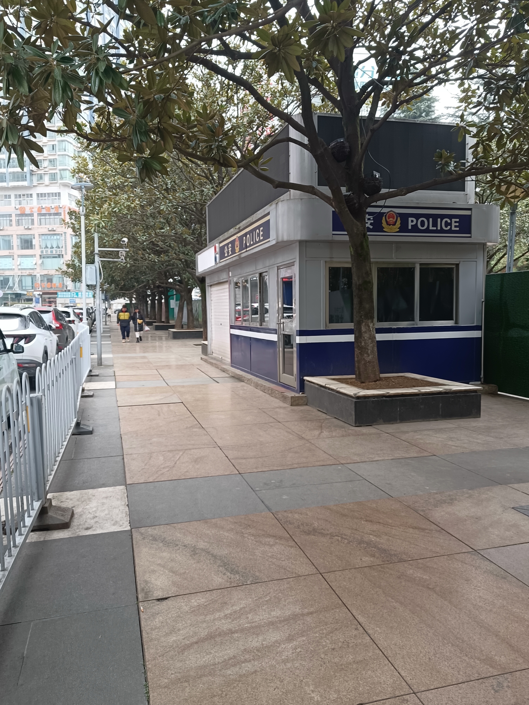

公安进程详细记录
2024年11月13日 9时左右
王贵平达到贵阳毓秀路派出所，准备领取2019年1月20日18时50分许，被捕警在大十字广场河西路边的公安岗亭扣留的个人随身物品，接待民警编号为X00028。结果该民警拿出登记簿，上面只显示一张王贵平的工商银行卡被登记，显示有王贵平的署名捺印。王贵平称还有其它物品，该民警回应只有找实际办案民警，至于银行卡的问题，该民警的回答是不知道放哪里了，找不到了。最后王贵平什么都没领到。
存在问题1：银行卡是怎么来的，检查、扣押等相关视频在哪里？问题指向当日2位捕警以及其执法记录仪视频。
存在问题2：能证明指控证物OPPO A5手机来源的视频就是公安岗亭内的监控和当日抓捕民警的执法记录仪视频在庭审以及2024年11月5日王贵平拷贝的“正卷1”中缺失，指控证物OPPO A5手机是虚构事实或凭空捏造让人生疑。
存在问题3：抓捕过程的公安岗亭监控视频和抓捕民警的执法记录仪视频可直接证明王贵平送达看守所时右眼部、左背部、双手背的伤情是派出所工作人员所为还是案发时打斗受伤，但是这些关键证据缺失，系故意隐匿或其它原因没有出示或没有移送，让人难以信访。
法律依据：
《公安机关现场执法视音频记录工作规定》（公通字〔2016〕14号）， 查看原文
-
第六条 开展现场执法视音频记录时，应当对执法过程进行全程不间断记录，自到达现场开展执法活动时开始，至执法活动结束时停止；从现场带回违法犯罪嫌疑人的，应当记录至将违法犯罪嫌疑人带入公安机关执法办案场所办案区时停止。
- 第七条 现场执法视音频记录应当重点摄录以下内容：
- （一）执法现场环境；
- （二）违法犯罪嫌疑人、被害人、被侵害人和证人等现场人员的体貌特征和言行举止；
- （三）重要涉案物品及其主要特征，以及其他可以证明违法犯罪行为的证据；
- （四）执法人员现场开具、送达法律文书和对有关人员、财物采取措施情况；
- （五）其他应当记录的重要内容。
2024年11月13日 13:16
通过贵阳公安警务督察系统平台举报无回应
登记编码 zitsc06d64968c976
2024年11月13日 13:16举报内容：本人2014年11月13日早上去毓秀路派出所。领 （2019） 黔0103刑初821号案件被告人扣押随身物品，案发时本人在河西路边公安岗亭内，被扣押的随身物品有：
1、钱包1个； 2、电信电话卡1张；3、工商银行卡一张；4、笔1支； 5、小本子1个； 6、黄果树牌香烟1包；7、 打火机1个。
但是到毓秀路派出所负责保管物品的民警（警号是X00028）拿出来一个登记簿,上面显示本人只有一张银行卡登记,而且现在银行卡也找不到了,其他物品没有登记，他也没有找到,之后我问他有没有扣押清单,他说要问具体办案的民警，我现在记不清是哪个民警办案，然后查看在一审法院的档案室的资料之后才发现，2019年1月21日晚，送押本人去看守所的民警庄**刚的联系方式是85281715,158*****444，联系到他之后，他说他只负责送押，其他的事情他不知道，这样我的随身物品一件没领到，而且扣押清单也没有，这可是程序性的文件，希望给一个合理的说法。
法律依据：
《公安机关现场执法视音频记录工作规定》（公通字〔2016〕14号）， 查看原文
-
第六条 开展现场执法视音频记录时，应当对执法过程进行全程不间断记录，自到达现场开展执法活动时开始，至执法活动结束时停止；从现场带回违法犯罪嫌疑人的，应当记录至将违法犯罪嫌疑人带入公安机关执法办案场所办案区时停止。
- 第七条 现场执法视音频记录应当重点摄录以下内容：
- （一）执法现场环境；
- （二）违法犯罪嫌疑人、被害人、被侵害人和证人等现场人员的体貌特征和言行举止；
- （三）重要涉案物品及其主要特征，以及其他可以证明违法犯罪行为的证据；
- （四）执法人员现场开具、送达法律文书和对有关人员、财物采取措施情况；
- （五）其他应当记录的重要内容。
2024年11月13日 15时许
王贵平到贵阳市公安局云岩分局督察大队举报，毓秀路派送所。
存在问题1：ppp
存在问题2：ppp
存在问题3：ppp
法律依据：
《公安机关现场执法视音频记录工作规定》（公通字〔2016〕14号）， 查看原文
-
第六条 开展现场执法视音频记录时，应当对执法过程进行全程不间断记录，自到达现场开展执法活动时开始，至执法活动结束时停止；从现场带回违法犯罪嫌疑人的，应当记录至将违法犯罪嫌疑人带入公安机关执法办案场所办案区时停止。
- 第七条 现场执法视音频记录应当重点摄录以下内容：
- （一）执法现场环境；
- （二）违法犯罪嫌疑人、被害人、被侵害人和证人等现场人员的体貌特征和言行举止；
- （三）重要涉案物品及其主要特征，以及其他可以证明违法犯罪行为的证据；
- （四）执法人员现场开具、送达法律文书和对有关人员、财物采取措施情况；
- （五）其他应当记录的重要内容。
2024年11月13日 下午
时间：2024年11月13日 16:06:15
地点：贵阳市毓秀路派出所
地点一：服务大厅
民警：你当时着（被抓）的时候你咋不讲呢？你现在那个。你好久出来的嘛？
王贵平：2013年1月20号（口误应该是2023年）。
民警：等于说当时你在打架，后面讲你抢手机？
王贵平：他后面给我做成抢手机，然后我去看守所才晓得呢，才反应过来。
民警：当时法院判的时候你咋（没讲）……
王贵平：我讲的，讲的，讲的没用。
民警：刚哥，王贵平的这个你有印象没有？说他打架被关。当时打架被关了呢嘛。
民警：你，王贵平本人是吗？
王贵平：是的。
民警：现在，刚才是个啥情况嘛？
王贵平：那天法院判的时候呢，上面写的这么多东西晓得吧，这么多证据，但是这些视频，呃就是那个……那天晚上的视频呢，就是我打人的那个视频都有，但是没有这个手机。（案发现场）那里有个公安岗亭，等于是在那个公安岗亭内出的案，但是公安岗亭内的那个视频没有。我就是着（被关）得莫名其妙的，就是！
民警：那打架的人呢，他说他抢手机的这个。
民警：带他去找钟所长呀。
民警：你这些东西在哪得的嘛？
王贵平：我自己打的。
民警：查阅档案你自己也查不到呀。
王贵平：我申请……
民警：申请对公嘛，还是对私呀，申请你肯定也查阅不到呀。你觉得这个案子有问题，你可以送（哪样）律师（呀），送哪……
王贵平：你看这个证据写是写这么多，但是我一样都没看着呀！
民警：这个（申请材料）东西。我暂时拿着一分钟，等一会儿我还你哈。
民警：先等一下哈，我和我们领导讲了。
王贵平：好的好的。
地点二：服务大厅旁边的保管室
民警：坐。（王贵平坐下）
A民警（有点像领导）：你来干啥？
王贵平：呃
A民警（有点像领导）：你来干啥？
王贵平：就是我那个（案子），他给我做成抢劫罪。我很莫名其妙的……
A民警：你坐了多少年嘛？
王贵平：四年。
A民警：你咋不上诉呢？
王贵平：上诉？上的呀。
A民警：然后呢？上诉，判了没有嘛？
王贵平：他搞一个，维持原判。
A民警：那么，你来找我们干啥呢？这个事！判都判了，你来找我们干啥呢？你，这个（查阅申请材料），这个东西是哪个拿给你的嘛？
王贵平：我自己做的。
A民警：个人哪会调得了东西！个人你调不到这些东西啊。你的律师，你有律师没有嘛？
王贵平：律师，没请。
A民警：你这个只有去申请，申请最高法复核。哪里会有你这种说法。
B民警：这个不该找侦查机关，应该找法院。
王贵平：法院我找过了的。
B民警：法院找了，你问一下律师哈。啊，第一……
A民警：（看完判决书）啊，你把人家手机拿了，把人家打了，就是抢劫啊。
王贵平：这是你们（派出所）写的，你们这里面写的……
A民警：你打人家没有嘛？
王贵平：打的呀。
A民警：你拿人家手机没有嘛？
王贵平：打和抢是两回事。
B民警：错！
A民警：你把人家手机拿了没有？
B民警：你说错了，兄弟。我给你讲，有个人……
A民警：我给你打个比方，你可能不懂。我想偷你的手机，结果被你发现了，在这个时候，手机虽然说拿在你手上，结果被人家……
王贵平：但是那个手机我看都没看到过哈。
A民警：结果，不管为啥，你为了拿这个东西打了我一拳，你就是抢劫，就这么简单。
B民警：盗窃转换为抢劫。
A民警：这个，哪有你这种说法，国家犯罪成本这么低，呃，大家都可以犯罪了，不行嘛！
王贵平：凡事，要讲个证据喽，这个！
A民警：你打人家没有嘛？
王贵平：打的，和（抢是两码事）……
A民警：拿到手机没嘛？
王贵平：不得（没有）！
A民警：你打人家干啥呢？
王贵平：那天出了点……
A民警：你打人家干啥嘛？你打人家又没*手机。
王贵平：那天情绪有点那个（失控）。
A民警：那，你打人家了呢嘛。
王贵平：打和抢不是一回事！
A民警：你拿人家手机呀。
王贵平：没拿。
A民警：没拿这个手机，你不会打人家啊？
王贵平：啊？
A民警：你不为这个手机，你不会打人家啊？
王贵平：那这个手机在哪里喽？监控在哪里喽，问题是？
A民警：我不想和你讲这些，在哪里。我只晓得判决书在这里。
B民警：这个，判都判了。你一审判的时候你咋不上诉啊？
某民警：～～（该部分语音辨识不清）所有的证据，所有啥东西我们都是移交法院了～（实在听不清楚他说啥，翻译不过来）。
B民警：你如果认为，你这个有问题，你直接去找判决法院。我们只能以我们收，我们收集的证据，提交检察院，检察院提交法院。
A民警：你这个只有申请最高法复核。你认为你这个是啥子嘛，你认为就是个打架？
王贵平：就是个打，打人。
B民警：这个东西……
A民警：我直接给你讲。啊，判都判了，上诉也维持原判，那么就说明，我个人，虽然不是我办的，但是我个人认为，如果维持原判的话，证据链是完整的，并且是合法有效的。
C民警：你如果认为，证据有问题，在过程中对你的认定还是有问题，你依然可以找法院哈，这个早就移送到～（方言不好翻译，省略了）
A民警：你在哪里坐的嘛？
王贵平：嗯？
A民警：你在哪里坐的呢？
王贵平：北斗山。
A民警：那么，那期间你没有申请啊？
C民警：检察院也会起诉的啊。
（A、B）警：他上诉了的，上诉维持原判。嗯，（对王贵平说）是不是啊？啊，你上诉……
王贵平：维持原判。
A，B，C警：对了，是终审啊，那就再上啊。
王贵平：你看，这些都是法院的，那个证据。这个证据哪有（抢手机）
A民警：啊。
王贵平：这是从法院调的证据，你看哪里有我抢的手机嘛，图片也没有一张！
A民警：这个你在哪里得的嘛？
王贵平：法院调的啊。
B民警：你如果认为，这个东西……你可以去法院……
A民警：这上面，你的便捷有的呀。“有异议，我是治安案件，没有抢劫”，人家给你记了的呀。人家这个不是，凭你认为是啥就是啥。法院审理综合多种证据认定下来，才认定你是抢劫啊。
王贵平：这个就是那个法院掌握的所有的东西。
A民警：不可能，这个是法院的判决卷，不是公安的侦查卷，啊。这个是法院的卷，不是公安的卷。
王贵平：你看这上面它（王贵平在云岩区法院拷贝的正卷存在手机里）写的是证据材料是吧？相关证据材料，你好好看一下，有哪一个证据是有手机的？
A民警：那么我就这样跟你讲，判了，法院判了，啊！请你去申请最高法院复核，完了。你个人来调东西，首先我们这里调不到，另外一个，我们也不会提供给个人。
C民警：卷也不在我们手上。
A民警：也不在我们手上，你坐着。
C民警：那么，直接去最高法院……
（王贵平最后无功而返）
时间：2024年12月16日 11:37:34（左右）
地点：贵阳市毓秀路派出所
对话内容
A民警：现在住哪里？
王贵平：现在住龙里。
A民警：贵阳没住住呢嘛。
王贵平：嗯，没有。
A民警：电话号码是好多？
王贵平：13885444983。
A民警：有职业没有？
王贵平：现在生病，暂时还没有。
A民警：文化程度？
王贵平：高中。
A民警：今日来派出所是因为什么事？
王贵平：因为……这些事情，我都写在上面（提前准备的资料）的，麻烦你看，哈。在那个110（报警系统）上面也有。
A民警：这个我倒是看了，那么你今天来是因为啥你要给我讲啊。
王贵平：呃。
A民警：今天你来我们派出所是因为啥？
王贵平：嗯，我那天通过110呢，本来是向贵阳市公安局报的警，然后我不知道它为啥，为啥会接到你们派出所。然后呢，当天了，你们派出所又打电话喊我来核实情况，所以呢，我今天就来了。就是这么个情况。
A民警：核实啥嘛？
王贵平：这个是你们派出所的人打电话叫我过来的，我也不晓得核实啥。
A民警：派出所的人打的嘛。
王贵平：唉。顺便这个手机的，叫啥，指控的证物也有问题。
A民警：啥指控的证物有问题嘛？
王贵平：这个手机的真实性有点问题啊！我觉得。
A民警：手机，啥手机真实性有问题吗？
王贵平：就是这个案件的手机的那个，本来我（案发）之前用的手机就是oppo手机呢。
A民警：嗯，然后呢？
王贵平：然后他指控我的手机，我也没见过，照片我也没看到。
………
王贵平：麻烦你把它拷一份，或者复印一份。
A民警：啊？
王贵平：免得……我说麻烦你照个片或者是那个，到时候大家都好那个。到时候我来了，你，你，问你你不要说没这回事的话，那个就……
A民警：看不懂。
王贵平：咋会看不懂呢，这么简单。
A民警：确实看不懂。在哪里（2019年1月20日晚在派出所）被打了？
王贵平：就在值班室外面，我不晓得在哪里，有点像个房间里面，又像房间，又不晓得是不是房间，可能是更衣室我估计。
A民警：派出所吗，还是哪里嘛？
王贵平：就在派出所。
A民警：哪里的派出所？
王贵平：就在你们毓秀路派出所。
A民警：好久的事情？
王贵平：2019年1月20号晚上。
A民警：你说你晕倒，你咋会晓得你被别人扶到树下呢？
王贵平：我醒来就在那里的噻，没人扶我，我咋会被移到那个树下面呢。
A民警：路边么，还是哪里吗？
王贵平：啊？
A民警：是路边么，还是哪里嘛？
王贵平：你讲的是？
A民警：晕倒。
王贵平：晕倒就在（大十字）广场中心那里。
A民警：你说你下午苏醒后，因路人言语难听，咋个难听嘛？
王贵平：可能就是因为早上遭骂后，可能就是听人说话（情绪）不那个。
A民警：人家说啥嘛？
王贵平：那个时候，晕倒刚醒来，可能也没想到这么多，还可能就是。
A民警：等于你不知道人家说啥呢嘛。
王贵平：啊！
A民警：你不晓得对方讲啥呢嘛。
王贵平： 哎。
A民警：那么不知道对方说了什么，咋会有言语难听一说呢？
王贵平：可能他就是说话有点，咋讲呢哈，反正就是带黄腔的那种嘛，可能就是。
A民警：你都不晓得他讲的是啥东西，现在。呃带黄腔，我也搞不清楚。
王贵平：总的反正就是一个情绪的问题，没控制好。
A民警：你这个，你说的是语言与难听，你又不晓得对方讲的是啥东西。那你又是和哪个发生肢体冲突嘛？
王贵平：这些和这个案件没关系呀？
A民警：那么，你给我讲嘛，啥和这个案件有关系喽。
王贵平：就是那个手机的问题啊。
A民警：啥手机？
王贵平：就是只跟我抢的那个手机啊。
A民警：指控你抢的手机。等于你今天来，是说是派出所的民警人打的呢嘛，是这个意思吗？
王贵平：在派出所，除了民警还有谁敢打人？
A民警：我在问你，你不要反问我，我咋晓得！我是在问你，啊你是在向我反映，被警察殴打是吗？时间是1月20日晚上23点左右是吗？
王贵平：时间是在晚上21:00~23:00左右，反正就是在这段时间。
A民警：21:00~23年左右，是不是这个意思？
王贵平：那（材料）上面都写的很清楚的嘛？
A民警：我问你，不是说那上面清楚嘞！我看不懂，我就跟你讲，你要（我）咋讲。
王贵平：反正就是大概（晚上）9:00~12:00那段时间。
A民警：接近（晚上）12点是不是嘛？
王贵平：诶，接近晚上12点。
A民警：你说一下事情的经过。
王贵平：经过那（材料）上面都写的有啊。
A民警：刚刚我在讲因为啥被打这些，你说那不是重点，那么我就问你重点你讲给我听啊， 经过，是因为啥嘛！你讲给我听啊，是因为啥嘛？
王贵平：重点就是因为那天我打那个人，然后后面把我指控成抢劫。那这个证物手机的真实性，我不晓得是咋个证明这个，我没看到过手机。
A民警：几点钟打的人嘛？
王贵平：你讲的是我在那边（大十字广场）几点钟打的人是吧？
A民警： 诶，你不是说你打人呀，几点钟打的人嘛？
王贵平：我没带时间，上面写的是大概是晚上，下午18点左右吧，18点30分左右好像。
A民警：18时左右是不是嘛？
王贵平：判决书上是这么写的。
A民警：你在广场中心把人打了是吗？
王贵平：不是广场中心，是广场的边上挨着河西路的那点，那点还有个公安岗亭。
A民警：是你把人家打了，在河西路口那里呢嘛？
王贵平：就是在广场上挨着河西路边。
A民警：你把人打了是吗？
王贵平：诶。
A民警：对方是男的还是女的嘛？
王贵平：男的。
A民警：打了，然后呢？打了人然后呢？
王贵平：打了人，然后被他们（被害人，还有其他人）反应过来，就把我送到那个公安岗亭里面去。
A民警：是送到公安岗亭，还是哪样？
王贵平：公安岗亭里面。
A民警：然后呢？
王贵平：然后我等了大概半个小时以后……
A民警：里面有人没有嘛？
王贵平：我在里面的时候没有人，就是我一个。
A民警：等于对方把你送到里面，你就一个人在里面摆起呀？
王贵平： 唉。
A民警：那两个没和你在一起呀？
王贵平：那两个我不晓得，应该是在外面嘛。具体情况反正我也不清楚，反正我在里面。
A民警：等于岗亭里面没人？
王贵平：没有。里面有监控的。
A民警：有啥控都没用，5年了。
王贵平：这个时间不存在问题嘛。
A民警：那么，证明你不懂呢嘛。
A民警：大概等了半个小时的样子就有民警，是不是嘛？
王贵平：唉。
A民警：着装没有？
王贵平：现在我记不清楚了。
A民警：最后警察来干了啥呢？
王贵平：最后警察来就是，他喊我把身上的东西掏出来，放在那个凳子上。
A民警：警察来岗亭里，喊你把身上的东西掏出来是不是嘛？
王贵平：诶，就是随身物品。
A民警：放在岗亭里的凳子上是不是嘛？
王贵平：唉，里面有一个长凳子。
A民警：之后呢？
王贵平：掏出来以后，然后过一段时间好像，他做了登记以后，然后就，然后之后就给我上手铐嘛，就把我送到派出所来了，好像是打开执法记录仪的那天。
A民警：就是给你登记呢嘛？
王贵平： 唉，给我登记，但是没有手机哦。这个（纸质材料上写的）是我那天放在（岗亭里面的凳子）上面的东西。
A民警：给你登记完后，就有人给你上手铐是不是嘛？然后呢？
王贵平：然后就把我送到派出所来。然后送到派出所呆了差不多个把小时的时候，就在这个，这里应该是值班室嘛？
A民警：这里是值班室呀。
王贵平：就在值班室这里待了一个小时左右。然后就（被）带进调解室，那你是不是条件是嘛？
A民警：嗯。
王贵平：唉，先是（被）带进去那个调解室里面。然后又被带出去了，我不晓得是被带到哪个地方，不晓得是不是更衣室或者是，反正就是在一个房间里面。可能没监控里面。
A民警：被带到调解室，又被带到房间里，哪里的房间嘛？
王贵平：我不晓得，反正就是，这里（指责值班室门外左侧的屋子）。
A民警：然后呢？
王贵平：然后就招电棍，甩棍那些（违法使用警械）招呼了噻。
A民警：没其它呢嘛？
王贵平：反正到晚上12点左右的时候，再被带到那个，应该是讯问室嘛里面，就是那个，就是，开始做笔录的那里面是不是讯问室嘛？
A民警：你讲哪里？哪里做笔录？是在派出所里面，还是在哪？
王贵平：就在派出所（里），这里嘛。
时间：2024年12月16日 13:24:53（左右）
地点：贵阳市毓秀路派出所
实际做笔录A警：录笔录中，王贵平确认，已经改了两次，此次是第3次核对笔录内容
王贵平：这一张，这个字有点问题，应该是带言字旁那个讯，是讯问，不是询问，其他的都没啥问题。
A民警：签字。
王贵平：等于……你们先签嘛。
A民警：啊，我说是你看过了签字，后面他们会过来签字的。
王贵平：你们先签，我先去吃饭，吃饭完了，是哪个询问的，哪个签哈。
A民警：去（吃饭）呀。